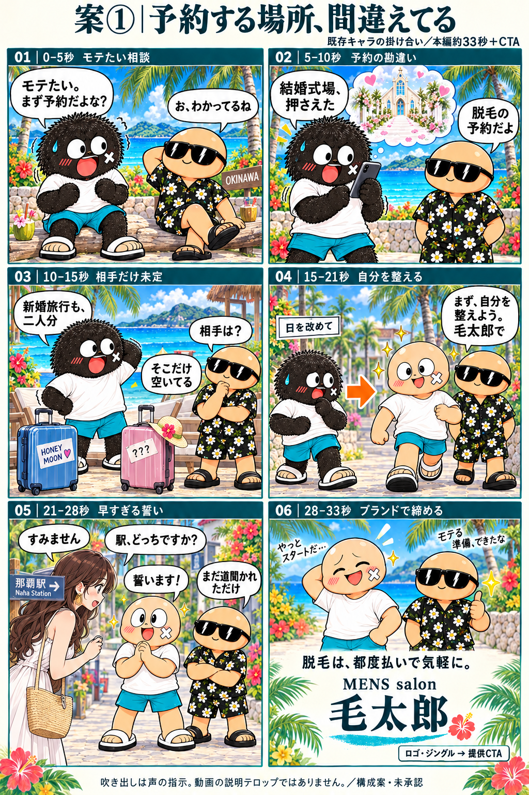
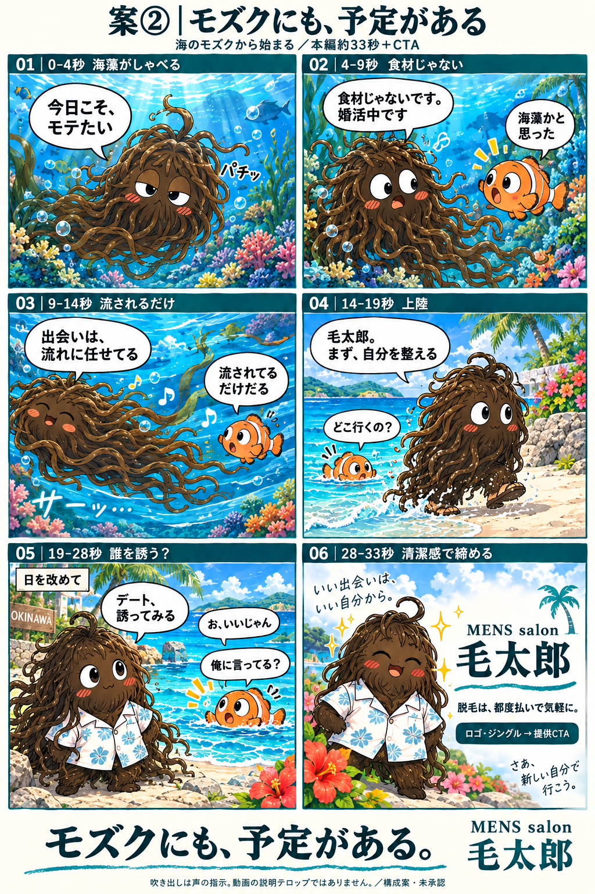
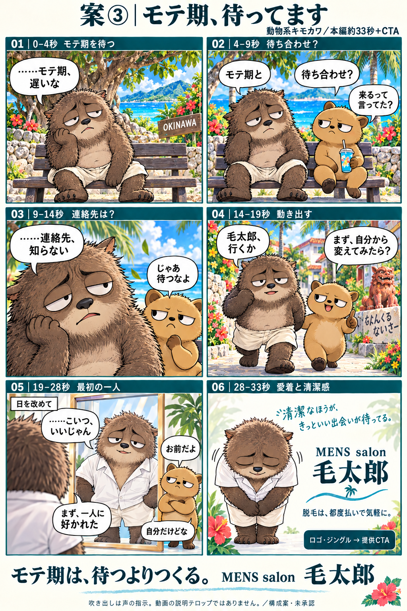

モテたい男の相談
毛太郎「モテたい。まず予約だよな？」 相棒「お、わかってるね」
ビーチの二人。毛太郎だけ前のめり。
2026.10.11 更新 ／ 検討用・未承認
既存キャラの掛け合い、海のモズク、動物系キモカワ。
冒頭の引きから広告の締めまで、6コマずつ比較します。
本編 約33秒＋提供CTA動画 ／ セリフ・尺は提案段階
恋愛だけ、三歩先。 既存の毛太郎とツルツルの相棒を使用。本人は真剣、相棒は冷静。その温度差で笑わせます。

毛太郎「モテたい。まず予約だよな？」 相棒「お、わかってるね」
ビーチの二人。毛太郎だけ前のめり。
毛太郎「結婚式場、押さえた」 相棒「脱毛の予約だよ。何人飛ばした？」
妄想の鐘を鳴らし、ツッコミで現実へ戻す。
毛太郎「新婚旅行も、二人分」 相棒「相手は？」 毛太郎「そこだけ空いてる」
二つの旅行かばん。空席を見せて一拍。
相棒「まず、自分を整えよう。毛太郎で」
一緒に歩き出す。日を改め、身だしなみを整えた姿へ。
女性「すみません」 毛太郎「誓います！」 女性「駅、どっちですか？」 相棒「まだ道聞かれただけ」
姿勢を正す毛太郎。女性の冷静な返答で落とす。
ナレ「脱毛は、都度払いで気軽に。」 ジングル「メンズサロン、けたろう♪」
笑いの余韻を残し、ロゴ → 提供CTA動画へ。
海藻だと思ったら、婚活中。 モズクのような毛並みの架空生物。沖縄の海の美しさと、妙に現実的な会話の差を使います。

主人公「今日こそ、モテたい」
海中で漂うモズクらしきもの。目が開いて視線が合う。
主人公「食材じゃないです。婚活中です」 魚「海藻かと思った」
食べようと近づいた魚が止まる。
主人公「出会いは、流れに任せてる」 魚「流されてるだけだろ」
キメ顔のまま画面外へ。セリフと動きを一致させる。
魚「どこ行くの？」 主人公「毛太郎。まず、自分を整える」
浜へ上がると短い足が見える。魚は水際で見送る。
魚「お、いいじゃん」 主人公「デート、誘ってみる」 〈魚を見つめる。一拍〉 魚「俺に言ってる？」
日を改め、整えた姿で登場。魚が半歩引いてオチ。
ナレ「脱毛は、都度払いで気軽に。」 ジングル「メンズサロン、けたろう♪」
白とターコイズのロゴ画面 → 提供CTA動画へ。
待っているだけの男が、動き出す。 少し長い胴、短い脚、人間くさい目元の架空の獣。奇妙な見た目から入り、ぼやきで親近感をつくります。

主人公「……モテ期、遅いな」
木陰でだらっと座る。ゆっくりこちらを見る。
相棒「待ち合わせ？」 主人公「モテ期と」 相棒「来るって言ってた？」
見た目の奇妙さに対し、会話は日常的に。
主人公「……連絡先、知らない」 相棒「じゃあ待つなよ」
一拍だけ無音。風が毛先を揺らす。
相棒「まず、自分から変えてみたら？」 主人公「毛太郎、行くか」
立ち上がる動きで、広告の行動につなげる。
主人公「……こいつ、いいじゃん」 相棒「お前だよ」 主人公「まず、一人に好かれた」 相棒「自分だけどな」
日を改め、明るい空間。整えた同じ獣が鏡の自分に会釈。
ナレ「脱毛は、都度払いで気軽に。」 ジングル「メンズサロン、けたろう♪」
柔らかい表情 → 白いロゴ画面 → 提供CTA動画へ。
下記は表情や会話の方向を比べる参考候補です。台本のセリフは今回のオリジナル。特定のキャラクター造形は流用しません。
③の方向の基準。動物の姿に、人間くさいぼやきを組み合わせる発想を参考にします。
2011年公開／今回いただいた指定参考として掲載。追加候補。短尺でのキャラ同士の関係性・会話の間を比較するための参考枠です。
2022年公開。公開情報追加候補。動物キャラの柔らかさ・親しみやすさを比較する参考枠です。
2024年公開。会話で挙がった別の「キモカワ系」作品と同一かは未特定です。